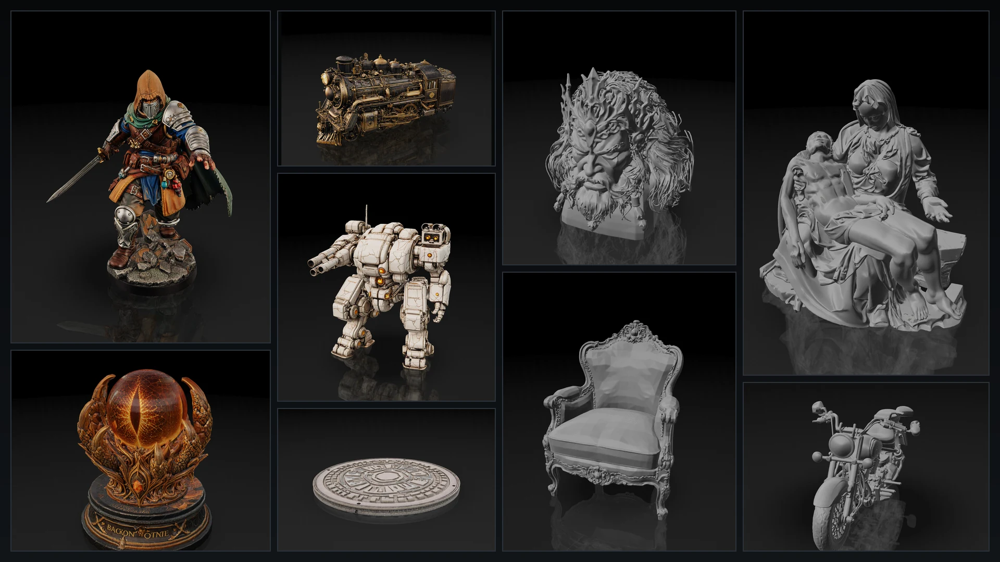
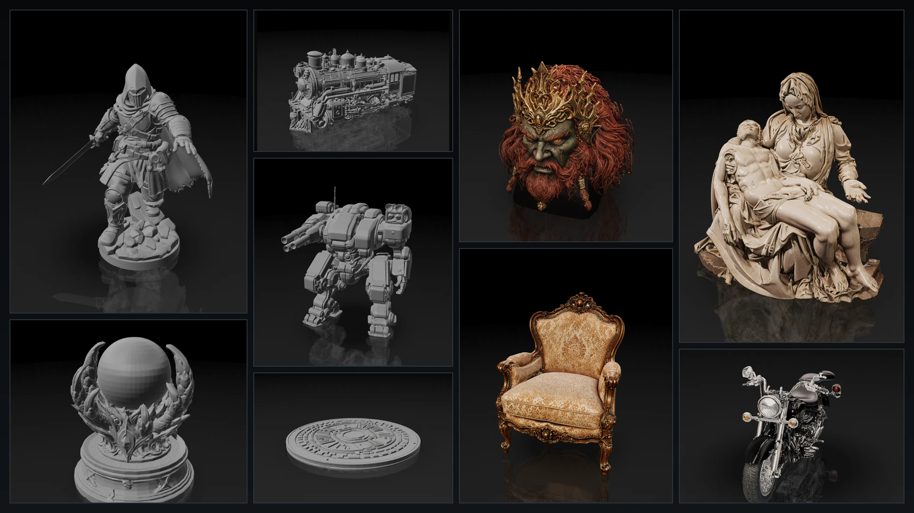

Production R&D
VARCO 3D
NC AI’s proprietary 3D generative AI service, delivering detailed 1024³ meshes, 4K PBR-aware textures, AI auto-rigging and retargeting, and decimated assets with normals baked from native high-poly detail.
- Contribution
- Led the VARCO 3D research direction across geometry-model training and acceleration and production CUDA systems for remeshing, UV unwrapping, and rasterization-based multi-view texture baking.